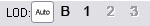
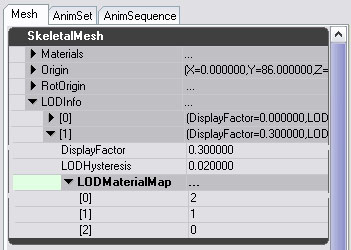

UDN
Search public documentation:
ImportingSkeletalLODs
日本語訳
中国翻译
한국어
Interested in the Unreal Engine?
Visit the Unreal Technology site.
Looking for jobs and company info?
Check out the Epic games site.
Questions about support via UDN?
Contact the UDN Staff
中国翻译
한국어
Interested in the Unreal Engine?
Visit the Unreal Technology site.
Looking for jobs and company info?
Check out the Epic games site.
Questions about support via UDN?
Contact the UDN Staff
UE3 Home > Skeletal Meshes > Importing Skeletal LODs
UE3 Home > Character Artist > Importing Skeletal LODs
UE3 Home > Character Artist > Importing Skeletal LODs
Importing Skeletal LODs
Overview
Because updating all the bones and vertices of a skeletal mesh can be quite expensive, Unreal Engine 3 can render different LOD (Level Of Detail) versions of the skeletal mesh relative to the distance that the skeletal mesh is seen from. This can be a significant optimization when rendering many skeletal meshes in a scene. Unreal Engine 2 used to automatically generate lower polygom versions of a skeletal mesh, but this functionality was removed as the results were often far worse than artist created LODs. Unreal Engine 3 supports both Mesh and Bone LOD for skeletal meshes. There is no tool that automatically generates lower LOD meshes; this must be done by an artist in the content creation package used in the work pipeline. The artist created meshes are then imported into an existing skeletal mesh using the AnimSet Editor. From there, you control at what distance that LOD is used in the game. When rendering a lower LOD version of a mesh, the animation system will only animate and update the bones required.
Lower LOD mesh requirements
When you import a lower LOD version of a mesh, there are some requirements you must meet to use a mesh as an LOD for another:
- When removing bones, they can only be removed from the ends of the hierarchy. So removing fingers is a good idea for an LOD, but you cannot remove bones from the spine for example.
- The root bone for the base mesh and the LOD should be the same.
- The hierarchy of the base mesh and the LOD must be the same.
Viewing LODs
There are some buttons on the toolbar of the AnimSetViewer that allow you to see how the different LOD levels for a mesh look: 
- Auto - Select the LOD level to use automatically, based on the size of the mesh on the screen. This allows you to preview how the mesh will look in-game.
- B - Force the display to use the `Base' mesh (ie LOD 0).
- 1 - Force the display to use LOD 1.
- 2 - Force the display to use LOD 2.
- 3 - Force the display to use LOD 3.
Importing a LOD
First open the AnimSetViewer with the SkeletalMesh that you want to add an LOD to. Then under the `File' menu select `Import Mesh LOD'. You will be asked to specify the PSK file that contains the lower-detail version of that mesh. Once you have selected the .PSK to import, a combo box will pop up allowing you to choose which LOD level to import this mesh as. LOD 0 is the `base', or highest poly mesh. LOD 1 is the first step down and so on. Importing at an LOD that already exists will replace the existing LOD mesh. If your import goes successfully and does not generate any errors, you can press the appropriate `Force LOD' button on the toolbar to see if your mesh came in correctly.
Configuring An LOD
There are some settings you will need to adjust for your LOD to work properly. Each LOD level has an entry in the LODInfo array under the Mesh tab on the right.  You can ignore entry 0 in this array, as that is the Base mesh LOD entry.
- DisplayFactor - This controls how big the mesh must be on screen before that LOD is used. A smaller number means the LOD will be used when the mesh is further away. You can see the current DisplayFactor for the preview of the mesh at the top of the 3D window. The DisplayFactor for each successive LOD level should be smaller than the last.
- LODHysteresis - To avoid meshes flickering between two LOD levels when right on the boundary between them, this parameter allows you to introduce some `bias' when transitioning from simple to complex versions.
- LODMaterialMap - LOD versions of a mesh must use the same materials as the base mesh. However, when you import a mesh the materials may be imported in a different order. This array allows you to choose which element of the SkeletalMesh's Materials array maps to each section of the LOD.
Materials and LODs
The easiest way to set up an LOD is to have it use the same materials as the Base mesh. Because each SkeletalMeshComponent (instance of a skeletal mesh) has its own Materials array which allows you to override materials in the SkeletalMesh Materials array, you want to keep all the materials you use at any LOD in that array. An example of per instance override would be applying different team skins or faces. However, if you do want to create an LOD which uses a material not used by the base mesh, this is still possible. Add a new element to the Materials array in the SkeletalMesh, which will be unsused by the base mesh, and put the new material there. Then use the LODMaterialMap for that LOD to point to that new slot.
LOD, Sockets and PhysicsAssets
You can only create sockets to bones that appear in all LODs. When you create a new socket, only bones in all LODs will be offered in the bone selection combo. If you try and import a new LOD which is missing a bone required for a socket, you will get an error. Bones required by the PhysicsAsset are always updated, even if not required by that LOD's mesh. This is because they are used for per-bone collision detection, which should not change when someone is further away from you.